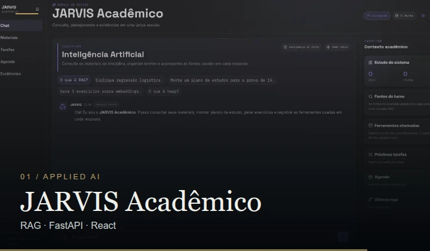
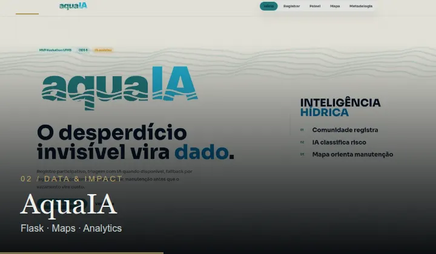
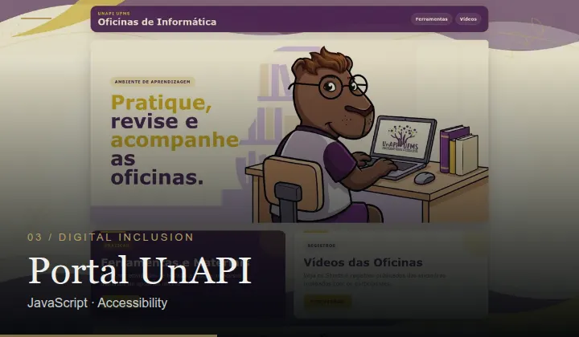
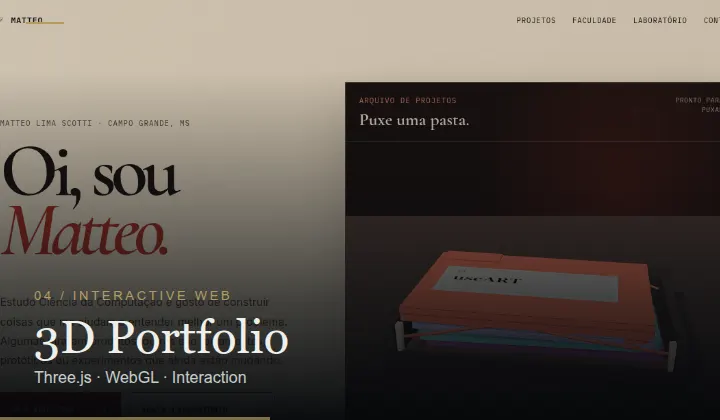

01 / The journey
Made to be seen.
Four real projects, a contemplative landscape and an original ambient soundtrack. Created with Remotion.
02 / Selected work
Real work. Real screens.
The images are captures from actual projects. Select one to see the source repository.

01 / APPLIED AI
JARVIS Acadêmico
Document retrieval · RAG · tool calling

02 / DATA & IMPACT
AquaIA
Water waste reporting · maps · analytics

03 / DIGITAL INCLUSION
Portal UnAPI
Accessibility · digital literacy · education

04 / INTERACTIVE WEB
3D Portfolio
Three.js · WebGL · interactive experience
The work continues
Build. Test. Understand.
Theory brings better questions. Practice demands better answers.
View my GitHub ↗